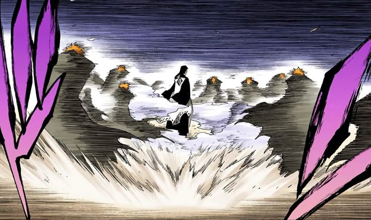
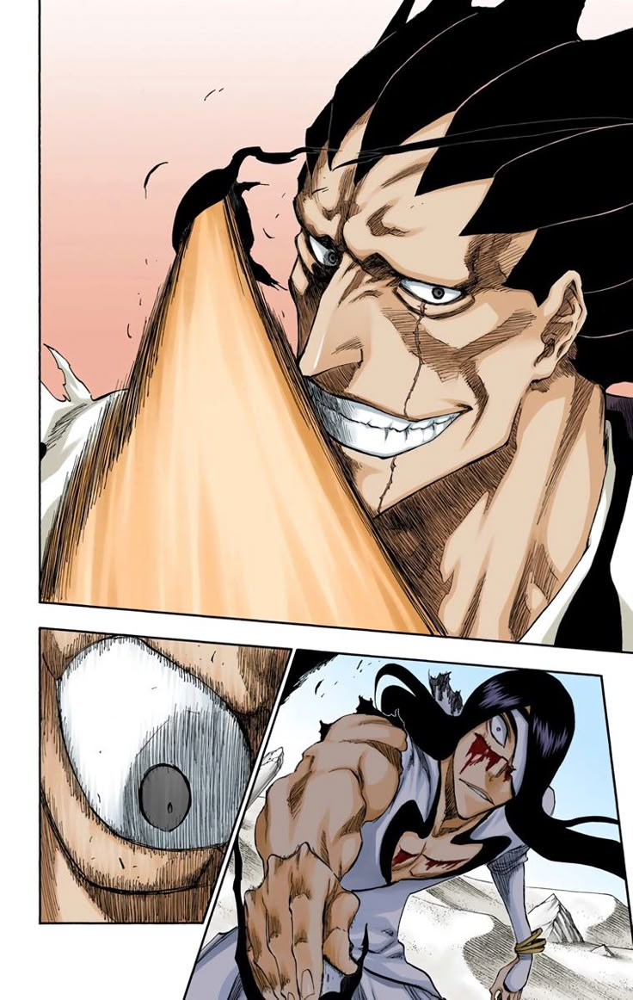
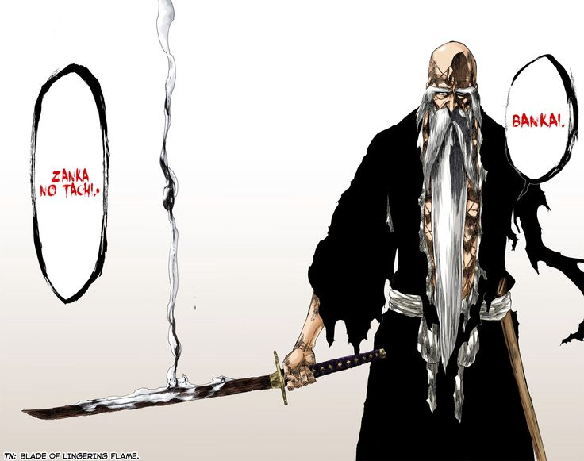
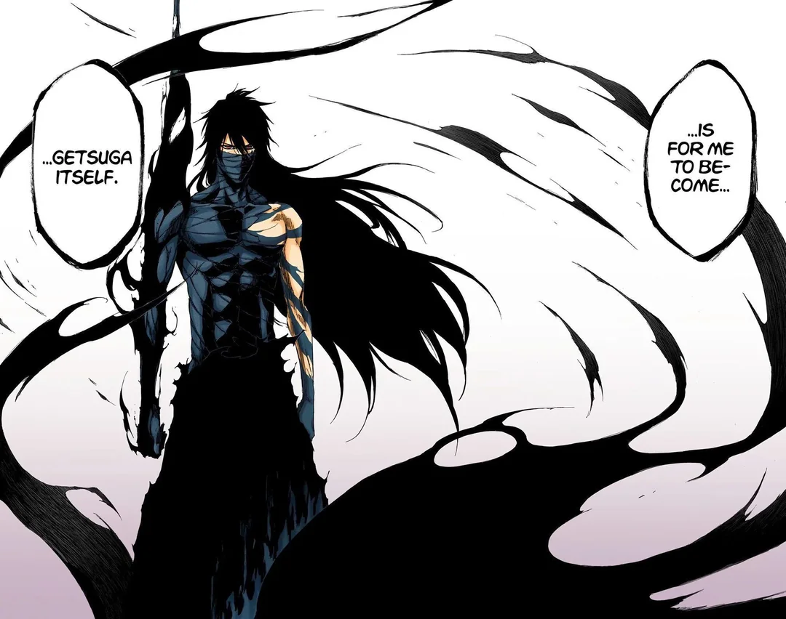
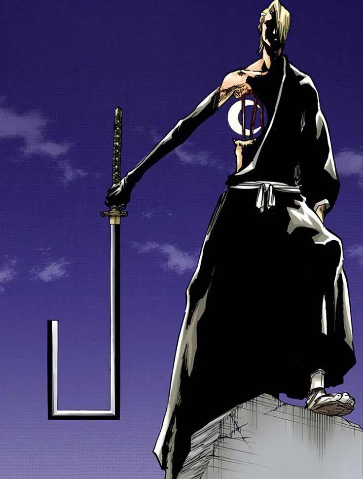
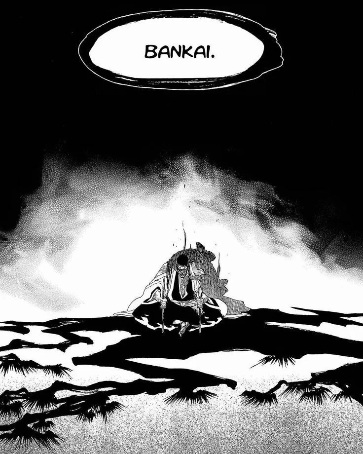

Ichigo showing his flash step technique against Byakuya.

The Gotei 13 going after Aizen after finishing their fights with the Espadas.

Nnoitora accidentally takes off Kenpachi's eye patch. His eye patch was to
conceal his maximum power.

Yamamoto reveals his Bankai.

Ichigo after he arrives at the Soul Society seeing the destruction that the
Quincies caused, then Byakuya tells him to protect the Soul Society.

The introduction to the Espadas.

Ichigo's Mugetsu form.

Kira's comeback after he died and Mayuri revived him.

Coyote Starrk showing Kyoraku that he is the no.1 espada.

Kyoraku's Bankai.